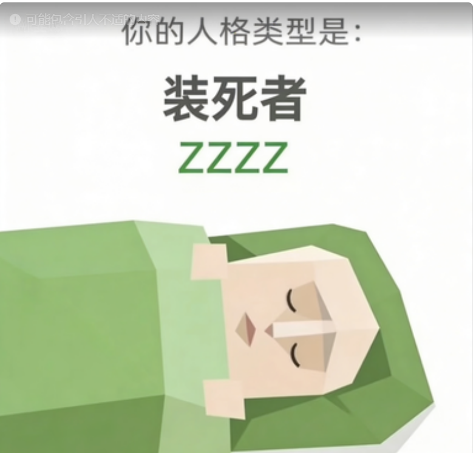

ZZZZ（装死者）
我没死，我只是在睡觉。
恭喜您，您测出了全中国最稀有的装死人格。群里99+条消息您可以视而不见，但当有人发出"@全体成员 还有半小时就截止了"的最后通牒时，您也许会像刚从千年古墓里苏醒一样，缓缓地敲出一个"收到"，然后在29分钟内，交出一份虽然及格的答卷。是的，直到"死线"这个唯一的、最高权限的指令出现，您就真正爆发了，不鸣则已，一鸣惊人。您向宇宙证明了一个真理：有时什么都不做，就不会做错。

我没死，我只是在睡觉。
恭喜您，您测出了全中国最稀有的装死人格。群里99+条消息您可以视而不见，但当有人发出"@全体成员 还有半小时就截止了"的最后通牒时，您也许会像刚从千年古墓里苏醒一样，缓缓地敲出一个"收到"，然后在29分钟内，交出一份虽然及格的答卷。是的，直到"死线"这个唯一的、最高权限的指令出现，您就真正爆发了，不鸣则已，一鸣惊人。您向宇宙证明了一个真理：有时什么都不做，就不会做错。
